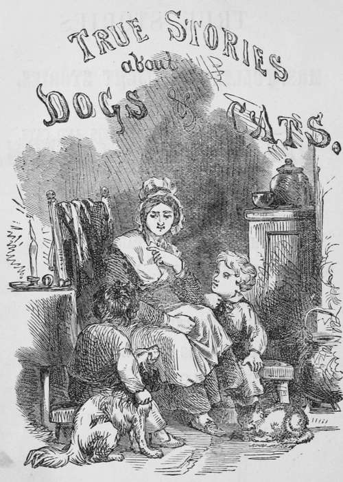

True Stories About Dogs & Cats
Description
This section is from the book "True Stories About Dogs & Cats", by Eliza Lee Cabot Follen. Also available from Amazon: True stories about dogs & cats.
True Stories About Dogs & Cats
In a pretty, quiet village in New England lived Mary Chilton. She was a widow. She had two sons; and it was the occupation and the happiness of her life to do all she could to make her boys good and happy. I should say to help and teach them to be good and happy; for boys and girls must make themselves good ; and then, of course, they will be happy; and no one can be made good or happy against his will.
I hear some boy or girl who reads this say, " How old were they, and what were their names ? " No boy can get along with another boy till he knows his name and age, and so, that you may be sure that they were real, live boys, I will tell you these important facts. The eldest was called Frank, and was nine years old. His brother was called Harry, and was seven. They were very much like other boys, somewhat disposed to have their own way in every thing, and a little vexed when they could not do, as they pleased ; sometimes really wishing to do right, and be obedient, and make their mother happy.
The little fellows were fond of saying to their mother that when they grew bigger they should take care of her; and the idea that she depended upon them for her happiness often made them stop and think when they were disposed to do a wrong thing.
When Harry said to Frank, " Mother will be so sorry if we do it," Frank would stop and think, and that was enough.
Stop and think. Grand words, and worth attending to. I believe that, if boys and girls would only keep these words well in mind, there would be only a small number of really naughty children.
It was a custom with this good and faithful mother to have a little talk with her boys, every night before their bed time, of what had passed during the day. Sometimes she told them stories, sometimes they repeated poetry.
The hours they passed in this way were the happiest in the whole day. Some of their twilight talks and stories Mrs. Chilton wrote down, thinking they might amuse some little cousins, who lived at a distance. Perhaps some other little boys and girls may like to hear them too.
One evening, early in November, when tea was over, and the tea things were removed; when the nice hearth was swept clean, and the great wood fire was blazing brightly, and sending forth its cheering light and heat through the whole room, Frank and Harry had taken their accustomed places, one on each side of their mother who was sitting on the old-fash ioned sofa. Each one appropriated a hand to himself, when they both, almost in the same breath, said to her, " You promised us, Mother, if we were good boys, to tell us a story this evening. Now, have we not been good boys all day ?"
"Yes, you have," she replied; "you have not quarrelled, and you have got your lessons well; and I will gladly perform my promise. But I hardly know whether I can remember or make up any story to tell you. However, I will do my best. What sort of a story will you have ? "
"I," said Frank, " should like a real good true story about a dog, or any other animal".
"And I like a made-up story best," said Harry.
"I have an anecdote of a dog for you, Frank, which a friend related to me the other day, and which I determined to remember to tell you, as I recollected your love for dogs. The lady who told me the story is an English woman. She was in the place where the thing happened, at the very time, and knew the dog and his master.
An English gentleman had a small dog, I think a terrier; he took it with him across the English Channel to Calais which, you know, is in France. He had business there, and remained some time. One day his poor little dog was severely treated by a French dog, much larger than himself.
The little terrier knew that he could not punish the big French dog. For some days you might see him with his head hanging down as well as his tail, and a most melancholy expression in his face. At last, he disappeared. His master, who was very fond of him, made every inquiry after him. In vain — his little four-footed friend was nowhere to be found.
One day, not long after, in walked the terrier, bringing with him a dog much larger than himself. He and his big friend looked very busy and important, as if they had on hand some weighty affair to transact. They showed how seriously they were cogitating, by curling up their tails even more than common.
The terrier, after receiving gratefully his master's caresses, and taking care that his great friend should receive his full share of the food which was given them, led the way, through the court yard, to the front of the house. There they took their place, and sat for a long time, looking as solemn as two judges hearing a cause, or two deacons at church watching some troublesome boys.
It seems the little terrier had been to England, and told of the bad treatment he had received from the large French dog, and had brought over a great dog friend to avenge the insult.
Patiently they sat for some time, looking up street.
At length, the terrier began to prick up his ears, and, in dog language, he told his big friend that the enemy was approaching. They waited quietly till he was near them, and then they both sprang upon the cowardly fellow, gave him a good drubbing, and sent him off with his tail between his legs.
After this, the big English dog, without looking round to see what they did, and said, and how they looked in France, wagging his tail with great satisfaction, and perhaps saying to the little dog that he could not understand French, and pitied him for having a master who could endure living in a foreign land, especially France, his dogship walked aboard a packet, and, with a solemn face and self-satisfied, triumphant air, without paying his passage, and with his tail turned towards France and the ship's company, placed himself in the forward part of the vessel, and so returned to his native land.
Continue to: